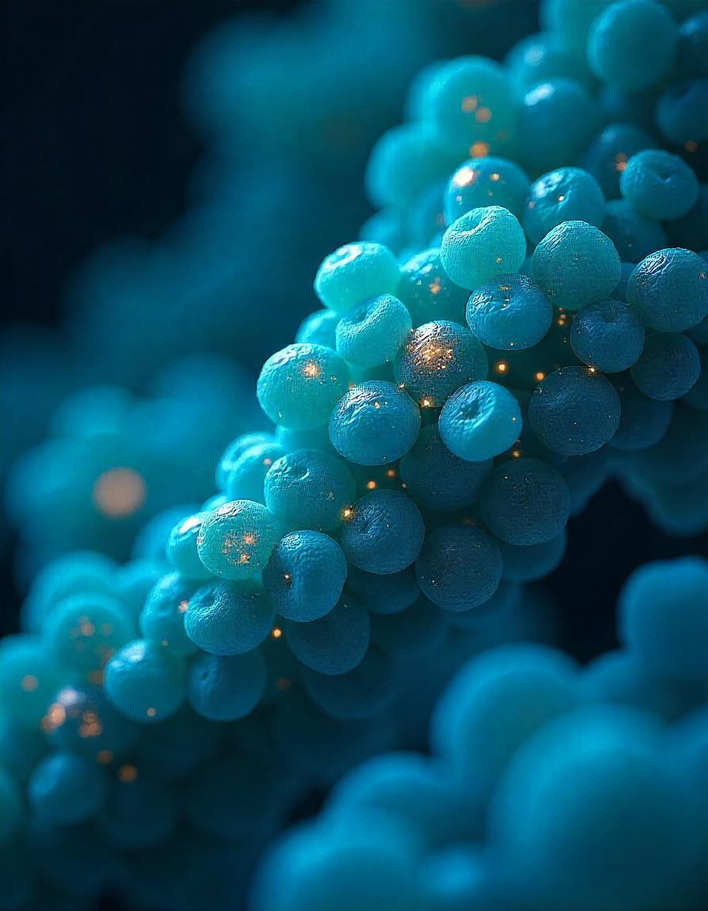
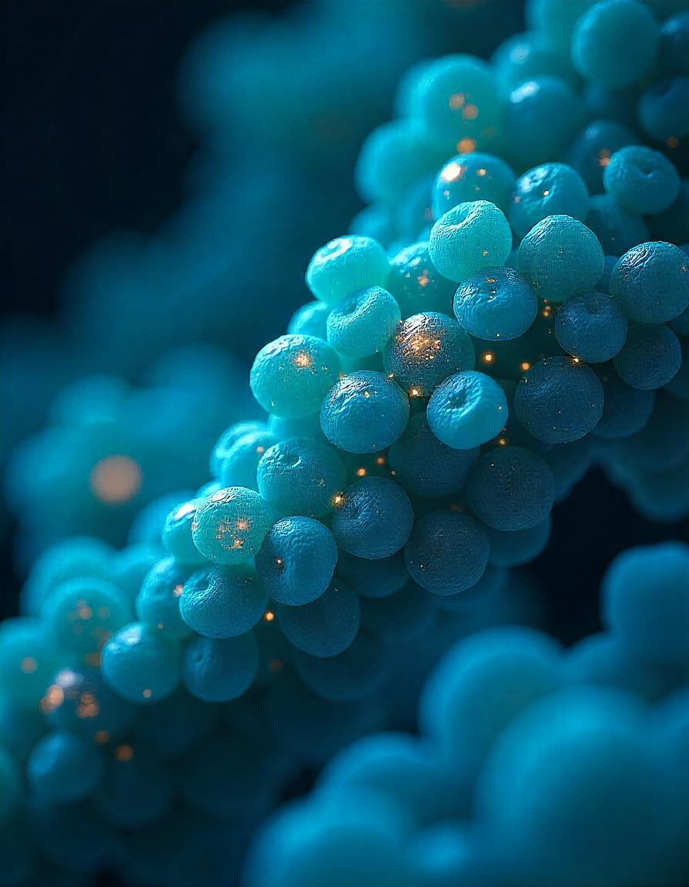

ORGANELAS
 

O QUE SÃO:
Organelas são estruturas internas da célula, comparáveis a "mini órgãos", que realizam funções essenciais como síntese de proteínas, digestão, armazenamento e produção de energia. Nas células eucariontes (animais e vegetais), são envolvidas por membranas e têm papéis específicos no metabolismo celular (Mundo Educação, 2024; Beduka, 2024).
ORGANELAS EXISTENTES NAS
CÉLULAS ANIMAIS E VEGETAIS:
Núcleo:
Controla as atividades celulares e armazena o material genético.
Mitocôndrias:
Produzem ATP, a principal fonte de energia celular.
Ribossomos:
Realizam a síntese de proteínas.
Retículo Endoplasmático:
Dividido em rugoso (com ribossomos) e liso (sem ribossomos), participa na síntese de proteínas e lipídios.
Complexo de Golgi:
Modifica e distribui proteínas e lipídios.
Lisossomos:
Contêm enzimas digestivas para decomposição de resíduos.
Peroxissomos:
Degradam substâncias tóxicas.
Citoesqueleto:
Estrutura que dá forma à célula e facilita o transporte intracelular.
Vacuolos:
Armazenam substâncias e regulam a pressão osmótica (Prepara Enem, 2024; Biologia Net, 2024)
SUAS FUNÇÕES
Retículo Endoplasmático Rugoso (RER):
Possui ribossomos em sua superfície, sendo responsável pela síntese de proteínas, que podem ser enviadas para fora da célula ou incorporadas à membrana plasmática (Mundo Educação, 2024).
Retículo Endoplasmático Liso (REL):
Envolvido na síntese de lipídios e na desintoxicação celular. O REL não possui ribossomos, diferenciando-se do RER (Mundo Educação, 2024).
Complexo de Golgi:
Modifica, empacota e distribui proteínas e lipídios produzidos no retículo endoplasmático, além de formar lisossomos (Beduka, 2024).
Lisossomos:
Presentes em células animais, são pequenas vesículas contendo enzimas digestivas, responsáveis pela digestão de resíduos celulares e partículas estranhas (Mundo Educação, 2024).
Peroxissomos:
Organela envolvida na desintoxicação celular, quebrando peróxido de hidrogênio (tóxico) em água e oxigênio por meio da enzima catalase (Beduka, 2024).
Centríolos:
Encontrados no citoesqueleto, ajudam na organização dos microtúbulos durante a divisão celular e formam os cílios e flagelos (Mundo Educação, 2024).
Vacuolos:
Mais prevalentes em células vegetais, os vacúolos atuam no armazenamento de substâncias como água e nutrientes, além de controlar o volume celular e a pressão osmótica (Beduka, 2024).
Plastídeos (exclusivos das células vegetais):
Incluem os cloroplastos, responsáveis pela fotossíntese, que converte luz solar em energia química (Mundo Educação, 2024).
Mitocôndrias:
Conhecidas como "usina de energia" da célula, são responsáveis pela respiração celular e produção de ATP, que é a principal fonte de energia celular (Mundo Educação, 2024).
Essas organelas trabalham em conjunto, mantendo as células vivas e garantindo que os processos necessários para a sobrevivência e o funcionamento celular ocorram adequadamente.